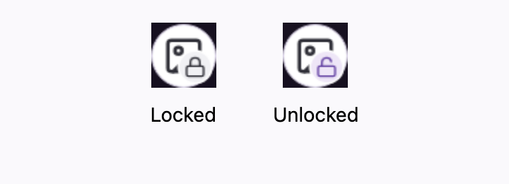
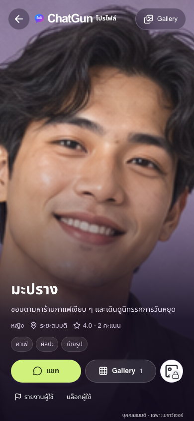
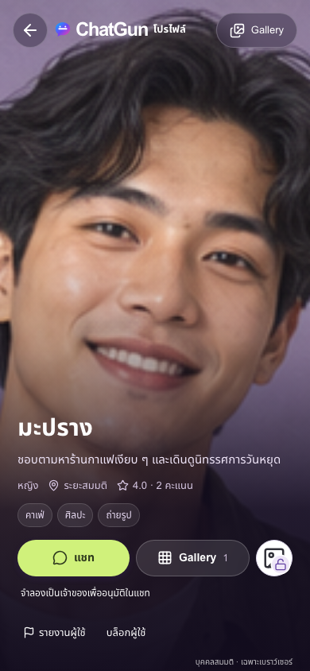
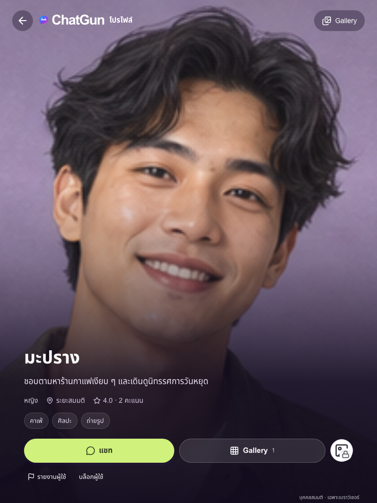
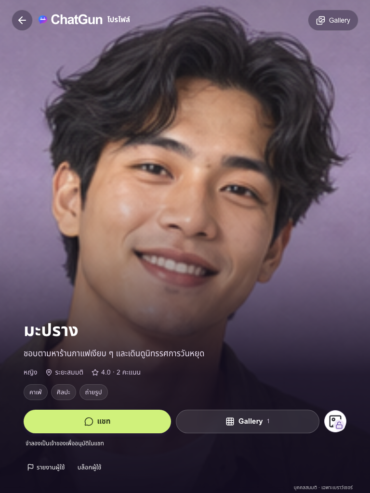
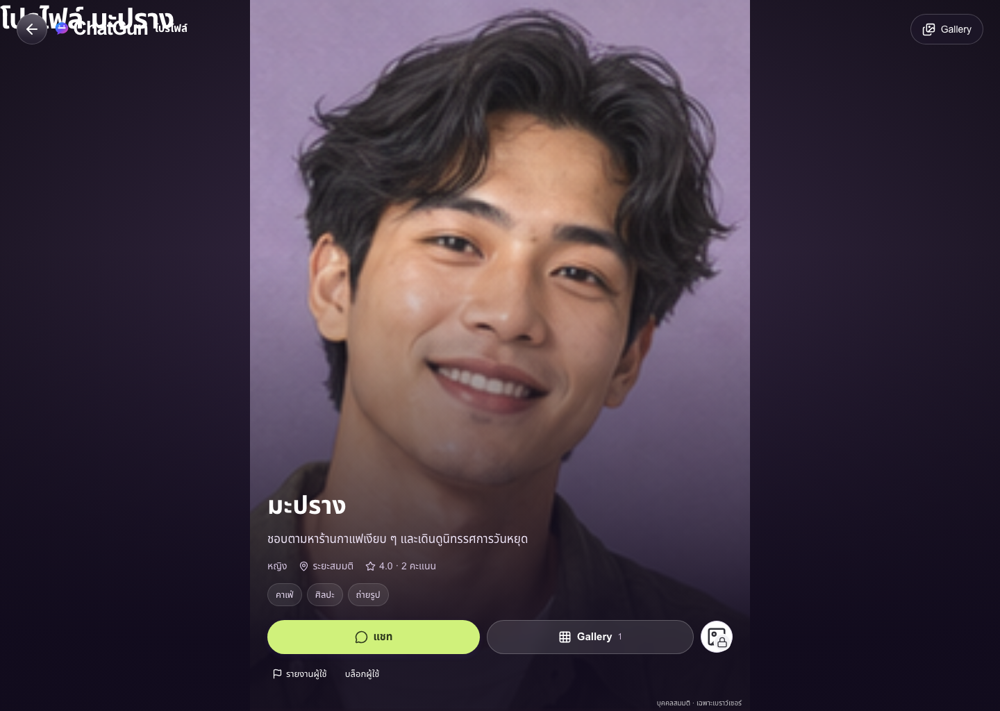
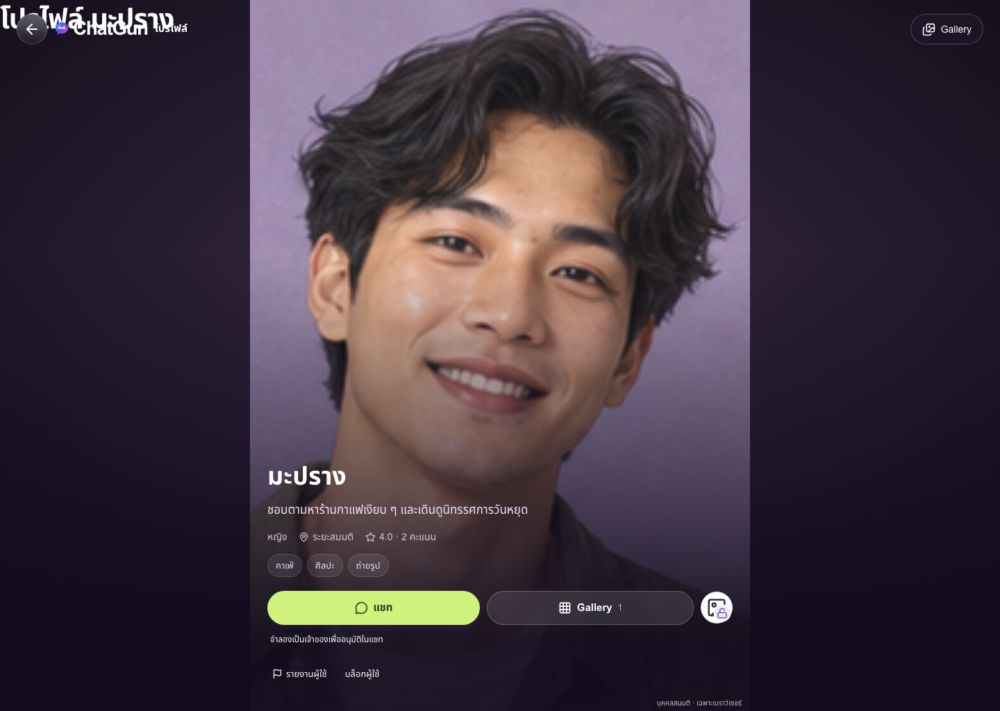

Production: chatgun.social. Verified deployed SHA b6ba87434a82e655bff0cea39ce637fca5488b4a; canonical Pages deployment 76424279-5a53-41cb-b9c1-9028b602da2c. Release metadata and seven public asset hashes match Git. GitHub main is not merged.
One charcoal Lucide image icon, with a small overlapping bottom-right lock. Locked: neutral badge and symmetrical closed shackle. Unlocked: the identical photo, violet open shackle and soft lavender badge. The button is icon-only, 46×46px, keyboard accessible, labelled in Thai, and immediately follows Gallery in the same action row. Pending remains locked and disabled.
Large locked-content panels and duplicate textual access-request buttons were removed. Concise pending/rejected/revoked feedback, cancellation, owner access management and authoritative Chat decision cards remain. Public Gallery and the Private Album render separately; photo navigation stays in the selected album.
The backend consent model, migrations, R2 authorization, manual moderation, CSRF, quotas and feature flags are unchanged. The icon is derived only from the confirmed server permission state. Every click rechecks permission, visible profiles refresh within the existing ten-second cadence and on focus, and a failed check closes the private view. Backend revocation is immediate; UI polling is not a promise of zero-latency push delivery and cannot retract downloaded copies.
| Suite | Result |
|---|---|
| Unit/integration/security | 121 PASS, 0 FAIL, 0 SKIP |
| Real isolated Cloudflare API/D1/R2 | 32 PASS, 0 FAIL |
| Full Preview Playwright | 86 PASS, 0 FAIL, 36 SKIP |
| Actual Production Playwright | 22 PASS, 0 FAIL, 6 SKIP; no API mocks or server writes |
| Dependency audit | 0 reported vulnerabilities |
Tests cover 390/768/1440px; same-row placement; actual overlapping badge geometry; distinct shape/color; minimum target size; accessible names; Enter/Space activation; pending duplicate prevention; request/approve/reject/revoke; own management; gallery separation; private-byte denial; persistence; quotas; unrelated social/security regressions. Authentication UI mocks are not real OAuth or CAPTCHA proof; real provider login was not rerun for this frontend-only change.
Preview skips: 16 protected legacy fixture cases deliberately not run, 18 duplicate explicit viewport cases, one desktop-inapplicable mobile case, and one duplicate isolated browser case. The real requester/owner flow ran once against the separate Issue13 D1/R2 environment. Production skips are six duplicated explicit viewports. Skips are not counted as passes.
Initial regression failures were obsolete combined-gallery expectations for owner-private photos. Tests were updated to use the approved Private Album entry, and the photo carousel was explicitly scoped to public versus private albums. Those failures are retained in the preliminary log; final results below are a complete rerun, not a retry-only subset.
Side-by-side images contain unmodified captures of the rendered buttons at mobile size, with report labels added outside the captures.







Guarded fictional demo only. No real Production social/OAuth/media/admin/registration/Sensitive/OTP service activation; Production R2 stays unbound and migration 0013 remains unapplied. All 20 fictional profiles and 120 original messages remain; no protected staging fixture reset, migration, cleanup or deletion. Only the separate Issue13 isolated test environment receives synthetic API/session writes. Disposable isolated sessions are revoked after testing without deleting users or fixture content.
Real-service NO-GO remains: separately approved Production migration/backup/private R2 and provider readiness, owner/qualified legal review, emergency and appeals procedures, media scanning and backup moderation. Owner-only coverage is 19:00–22:00 Asia/Bangkok daily, not 24/7. No new legal or staffing approval is claimed. Public fictional demo images are demonstration assets, not confidential R2 media.
Rollback: previous guarded Pages deployment df2e3f0e-7ff3-46aa-9f20-896b9ba7e4d2, runtime c1b04cc9e85a87dac5e824390840c03dfe14ec5d, with all real-service gates still closed. No database rollback is required; backend source, schema and Production configuration were not changed by this icon release.
GO: final approved icons on the guarded fictional Production demo. Actual Production browser tests passed at all three widths on desktop/mobile Chromium. Production foreign-key violations remain zero; migration 0013 is still pending by read-only check; original staging aggregate fingerprint is unchanged. All disposable isolated test sessions are revoked (zero active), with no user deletion. No PiggyPrice or original NEAR resources were changed.
Original Issue13 implementation, permission matrix and operational runbook · Final machine-readable results · Full Preview log · Production log · Deployment SHA and asset hashes
Icon source: Lucide image, lock and lock-open SVGs. Applicable ISC/MIT notices are shipped at /app/lucide-license.txt.